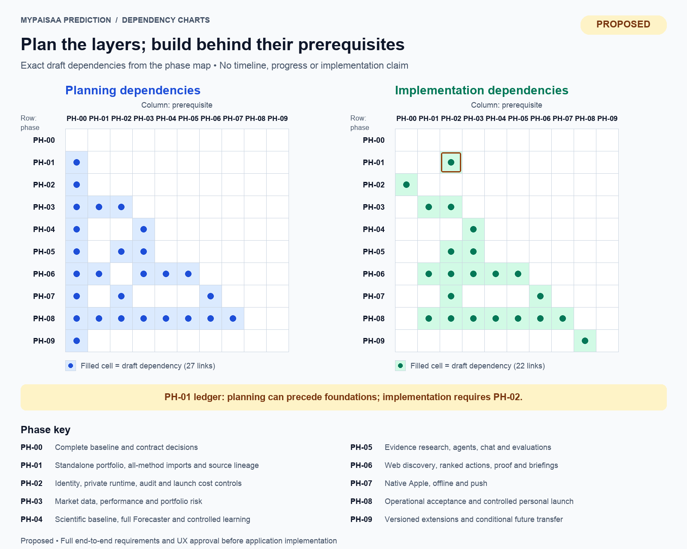

Requirements and architecture / 1 November 2026
Mypaisaa Prediction: phased delivery plan
Draft documentation · Independent review pending
Synthetic local/dev phase. End-to-end requirements, UX and architecture choices remain unapproved. No product deployment or Confluence publication has occurred.
Local draft · 1 November 2026 · MP planning only · End-to-end requirements and UX unapproved · Independent review not run
This plan divides the whole standalone product into ten layers. For each layer, complete its requirements, versioned contracts, local stories, acceptance evidence and UX states before considering its implementation. Agree the complete end-to-end baseline and UX before any application implementation starts. A completed layer draft, existing synthetic pack or approved individual decision does not grant that implementation permission.
The immediate work is local planning with realistic synthetic inputs. Actual holdings, screenshots and PDFs will arrive progressively and do not block these drafts. Live activation later requires verified instrument identity, permitted source coverage, supported layouts and full-scope pricing. No dates, delivery duration, live accuracy, subscription availability or completed phase exits are promised here.
Status and authority
| Area | Actual position on 1 November 2026 | Planned position |
|---|---|---|
| Product implementation | Health endpoint and local sample SSE; static concept preview. Auth, ledger/imports, providers, quantitative evaluation, agents and executable web/native/infrastructure remain unimplemented in the current implementation record. | Standalone personal investment ledger, analytics, research, forecasts and decision support. No trading execution or broker trading credentials. |
| Sample evidence | Local/dev synthetic 30-instrument real-ID market/ledger packs and clean generic PDF/PNG/operational companions have been prepared separately. Prices, accounts, transactions and outcomes are synthetic. | Coverage grows to all first-version input methods, named layouts and hostile/low-quality cases; actual documents added privately later. |
| Requirements | DEC-001–041 record confirmed individual answers. Scientific formulas, security/recovery details, exact benchmarks, materiality and other choices remain open. | One approved end-to-end baseline with linked stories, contracts, UX and evidence gates. |
| Architecture | Active A/B alternatives, neither selected. Both retain the explicit Anthropic Python client-SDK loop on Lambda calling Claude hosted directly by Anthropic. | Approved training/storage/runtime ADRs and cost envelope; no Agent SDK subprocess runtime or automatic live model promotion. |
| User interface | Requested adaptive SvelteKit 3 is not an installed/verified dependency. Existing Sites concept is not that PWA. | Verify current version availability before package selection. SwiftUI owns native iPhone/iPad UI and persistence within an RN navigation/bridge shell; device/Duo matrix agreed explicitly. |
| Costs and credit | £100 aggregate monthly cash limit; £70 planned plus £30 reserve; reported shared $200 Anthropic credit is unverified. | Launch dashboard cost attribution, credit/cash reconciliation and admission controls before paid workloads; full-scope priced evidence before selection/activation. |
| External systems | This draft creates no Jira issues or Confluence pages and changes no MA records. | Proposed stories target MP; proposed Confluence content targets mypaisaapr only after separately authorised sync. |
Current implementation claims come from the implementation plan, not a fresh deployment or live-account inspection. Historical Jira statuses and phase links in that plan are dated snapshots. This document proposes a new planning lens; it does not silently replace the canonical plan, accepted ADRs or external roadmap.
Confirmed product scope that each layer must retain
The product owns its investment accounts, transactions, holdings, imports, XIRR/performance, watchlists, conversations and historical decisions. CSV, Excel, PDFs/statements, screenshots and manual entry/correction all belong in the first version. Support is sample-backed and layout-specific: uncertain extraction must be reviewed; “all methods” does not mean every institution's arbitrary document. A snapshot can support holdings without supplying enough history for XIRR. Missing history is disclosed and unsupported measures are withheld.
Start with UK, US and India and approximately 20–30 active instruments covering holdings plus an owner-approved balanced research list. Use real identifiers with synthetic values now. Later, resolve actual listing identity and permitted coverage before final live universe selection and costing. Yahoo Finance plus Twelve Data Grow remain the chosen source mix, subject to exact tier, licence, history, retention and cadence evidence. Formal forecasts are daily; quote/risk checks are every 30 minutes only where supported, otherwise daily analysis with visible timestamps and suppression of unsupported intraday alerts.
Retain next-trading-day, 5- and 20-trading-day forecasts, 3/6/12-month forecasts and separate assumption-based 3–5-year scenarios. Daily refresh does not shorten the target horizon or mature an outcome. Rules/statistical baseline, F1–F8, patterns, point-in-time data, event/exposure research, contribution/rebalance experiments and proof/track record all remain in scope. Retain the initial three objectives: long-term growth with downside protection, benchmark-relative opportunity and protection/improved contributions for existing holdings.
Ranked add/hold/pause/trim/rebalance suggestions show reasons, uncertainty and portfolio impact, with growth/protection/opportunity components at the confirmed 35%/40%/25% weights. Exact normalization, thresholds, action bands and sizing remain open. Eligibility and abstention precede ranking. Rules, ML and LLM-assisted evidence remain visible separately; disagreement cannot be hidden behind a single confidence score. Uncalibrated rule strength is not a price-event probability. Nothing executes a trade.
The first screen is discovery/market; holdings have a separate section and contextual chat is available. Main-dashboard costs are a launch requirement, not a later admin-only feature. Show environment/provider/agent/model/feature/service attribution, source age and unknown allocations; separate estimates from provider billing and gross use from credit/cash. The reported shared credit is counted once and remains unknown until verified. Live estimates, Anthropic billing every six hours and AWS billing daily retain upstream delay. At forecast monthly cash £60 warn, £75 reduce optional work and £85 pause new optional paid jobs; these are not a universal instant AWS stop. Refuse uncovered/unverifiable Claude calls and never add paid fallback automatically.
Identity uses Cognito managed Apple/Google/passkey sign-in with verified linking and two independent passkey paths. Originals use encrypted private S3, renewable 24-month retention and owner extension/deletion controls, with no automatic expiry deletion authorised yet. Logs/traces/run summaries have 14/30/90-day retention subject to cost; financial, forecast, approval and source audits have separate durable policies. Monthly focused recovery/audit exercises and relevant change-triggered checks remain required. These are requirements, not configured services.
Ten phases and their outputs
Phase numbers organise planning and traceability, not a rigid coding order. PH-01 is the first detailed product specification. PH-02 is the foundation that its later implementation would consume. All rows are draft/planned and no phase exit is certified.
| Phase | Product outcome and required drafting outputs | Evidence required before the relevant implementation/release exit |
|---|---|---|
| PH-00 Baseline, contracts and decisions | Whole-product requirement trace; architecture A/B decision and full-scope cost assumptions; shared contracts; complete web/native flow and state inventory; permission boundary. | Approved full requirements and UX; material open choices resolved or explicitly deferred with scope/impact; no hidden source-scope loss. |
| PH-01 Portfolio and all-method imports | Own ledger/accounts/holdings; upload/extraction/matching/normalization; preview, dedup, owner confirmation, idempotent commit, reconciliation, correction/reversal, partial-history eligibility and source/audit lineage. Detailed companion files are coordinator-owned. | Sample-backed positive/negative coverage across CSV/Excel/PDF/screenshots/manual; exact ledger reconciliation; no invented history; secure originals and auditable reversal. Real institution support is claimed only when its own sample evidence exists. |
| PH-02 Private platform and launch cost controls | Cognito linking/recovery; private durable storage; API/SSE/job contracts; source/financial audit separation; retention classes; main-dashboard costs and cash/credit admission. | Cross-environment isolation, independent recovery paths, bounded/idempotent jobs, redaction and disconnect recovery; reconciled cost states including unknown credit; no paid work without admission. |
| PH-03 Data, performance and portfolio risk | Instrument/listing/source capabilities; point-in-time ingestion and calendars; XIRR/benchmark/FX conventions; concentration/exposure and both loss measures; daily versus 30-minute scheduling. | Per-listing capability and quality matrix; financial golden cases; explicit history gaps and source age; actual source rights and pricing before live activation. |
| PH-04 Scientific baseline, Forecaster and learning | Every task/horizon and scenario contract; transparent rules/statistical baselines; F1–F8; leakage-safe backtests; versioned forecasts/outcomes; ablations, shadow, promotion and rollback. | Temporal train-only transformations, purge/embargo, reproducibility, horizon maturity, calibration/coverage/sample sufficiency, market/kind subgroup and benchmark evidence; owner approval for every live model/calibration change. |
| PH-05 Research, agents, chat and evaluations | Sourced cards/news/events/exposure; bounded client-SDK tools; contextual chat; scoped memory/caching; settings/approval contracts; T0/T1/T2, online and human-calibrated evaluation. | Citation/numerical grounding, hostile-source quarantine, denied-tool/privacy/no-trading cases, bounded continuation and cost, judge calibration; no research agent changes financial truth or model eligibility. |
| PH-06 Web discovery, ranking, proof and briefings | Approved adaptive PWA views, main-dashboard costs, complete L1 journeys, horizon proof/disagreement/abstention, transparent ranking, summary/alerts and decision journal. | Accessible states and end-to-end contract joins; 07:30 Europe/London summary with per-market timestamps; 22:00–07:00 quiet hours, materiality/cooldown/weekend choices and safe fallbacks. |
| PH-07 Native Apple, offline and push | SwiftUI/RN bridge; shared API/state; iPhone/iPad/Duo layouts; offline privacy/accessibility; native and PWA push, with explicit advanced-capability release classification. | Contract compatibility, VoiceOver/Dynamic Type/reduced motion, stale cache/revoked-session safety, neutral notifications and verified platform fallbacks; no promise of instant OS delivery. |
| PH-08 Operational acceptance and personal launch | Record-class recovery/rollback; source-to-ledger/model audit exercises; incidents/DLQ replay; full-load cost/scientific/security/UX evidence; owner operations and admin requirements. | Approved release scope and all required layer joins; isolated restore and financial/hash reconciliation; monthly/change-check plan; priced budget/credit failures; deployment/spend separately authorised. |
| PH-09 Versioned extensions and conditional transfer | Future markets, themes, model/feature/task/agent plug-ins and bounded screening; optional explicit MA file interchange and a conditional advanced-Forecaster retirement checklist. | Per-extension rights/capability/cost/replay/shadow evidence and owner activation; no arbitrary runtime code. MA retirement requires a later refreshed parity/history/recovery case and explicit cutover consent. |
PH-01 detailed work and source ownership
The companion portfolio/import specification and detailed L1 story map are separate coordinator-owned drafts. This plan references their contracts; it does not invent or replace their final contents. Their local IDs are L1-S01–L1-S16, covering identity; upload; extraction; instrument matching; normalization; preview; duplicate handling; owner-approved idempotent commit; replay/projections; reconciliation; corrections; incomplete history/metrics; audit/retention; read/stream/clients; secure scopes/costs; and end-to-end evidence. Read the current companion map for exact criteria and dependencies. The entity/API contracts and worked acceptance examples provide the corresponding draft boundary definitions and synthetic walkthroughs. Product-wide stories record explicit related_L1_story_ids for their joins; these links do not duplicate or override L1’s own dependency graph.
The product-wide map reserves L1 to that file. Its 48 other umbrella stories use L0 and L2–L9 identifiers; none is a newly created MP key. This gives 64 local stories when the 16 delegated L1 stories are counted, without duplicating their ownership. Umbrella stories require further per-phase decomposition before baseline approval wherever the captured source has more detailed acceptance clauses.
Contract joins and failure handling
| Join | Producer → consumer obligation | Failure/degradation and required evidence |
|---|---|---|
| Originals → extraction → ledger | Pin hash/version/page or cell/field provenance; distinguish source value from normalized value; commit only owner-confirmed validated data. | Quarantine uncertain/hostile input, keep preview editable, make no partial financial commit. Retry/reversal cases reconcile ledger and audit. |
| Ledger → performance/risk/ranking | Expose dated holdings, fees/currencies and calculation-sufficiency flags; preserve snapshot versus transaction-history distinction. | Withhold unsupported XIRR/cost-based measures; show supported partial analysis and missing-history request. No manufactured transactions. |
| Provider → data → forecast/outcome | Pin listing, units, event/publication/known-at times, revisions and source capabilities; score the exact target only when mature. | Mark stale/provisional, fall back to eligible daily analysis, disable invalid forecasts/alerts and append corrections. |
| Evidence/agent → factor → model | Record citations and extraction version/time; keep untrusted content quarantined and numerical calculations typed. | Reject invalid tools/claims, abstain or remain in shadow; no LLM judgement becomes realised ground truth. |
| Rules/ML/research → ranked suggestion | Check all input eligibility and show disagreement before applying approved component weights. | Suppress ineligible action/rank claims; preserve source/proof and uncertainty, distinguish held assets from candidates. |
| Job/billing → admission/dashboard | Reserve bounded work and attribute environment/agent/feature/provider; reconcile estimates with delayed billing. | Unknown credit refuses uncovered Claude calls; stale billing is visible. Pause optional work without claiming bills stopped instantly. |
| Durable state → API/SSE/web/native | Stream semantic versioned events and IDs; authoritative reads recover state after gaps. | Reconnect/dedup/refetch, label offline age and block unsafe writes; volatile starter SSE is insufficient evidence. |
| Release/model → rollback/restore | Retain compatible artefacts, schema pointers and financial/forecast/approval/source history. | Pause affected features, restore into an isolated target and reconcile before switching; no overwrite of outcomes or silent source deletion. |
Dependencies and parallel lanes
There are two graphs. A planning dependency means an upstream draft contract seed is available for collaboration; it does not mean the whole upstream phase is implemented or accepted. The PH-00 baseline is assembled iteratively from all layers, then explicitly approved as a whole. This avoids treating “approve all requirements before coding” as a reason to postpone writing dependent specifications.
| Phase | Planning dependencies: draft seeds | Later implementation dependencies: accepted foundations/contracts |
|---|---|---|
| PH-00 | None; establish contract/decision seed, then incorporate every layer | No application implementation; whole-baseline approval gate |
| PH-01 | PH-00 | PH-02 plus whole-baseline approval |
| PH-02 | PH-00 | PH-00 approval gate |
| PH-03 | PH-00, PH-01, PH-02 | PH-01, PH-02 |
| PH-04 | PH-00, PH-03 | PH-03 |
| PH-05 | PH-00, PH-02, PH-03 | PH-02, PH-03; numerical factor promotion additionally requires PH-04 evidence |
| PH-06 | PH-00, PH-01, PH-03, PH-04, PH-05 | PH-01–PH-05 |
| PH-07 | PH-00, PH-02, PH-06 | PH-02, PH-06 |
| PH-08 | PH-00–PH-07 | PH-01–PH-07 and relevant model-eligibility gates |
| PH-09 | PH-00; can specify extension contracts now | PH-08 before post-launch activation, plus each extension's individual evidence |
After explicit implementation authorisation, the broad foundation order would be PH-02 → PH-01 → PH-03, then PH-04 and PH-05 can advance in parallel behind pinned contracts, followed by PH-06, PH-07 and PH-08. Native shell/contracts can be specified earlier; feature acceptance still waits for the matching producer. No speculative implementation is authorised by this dependency graph.
User concurrency allows at most five total agents including the coordinator, subject to the session's lower limit. This session supports four total, therefore one coordinator and at most three worker lanes. The current useful maker lanes are (1) L1 portfolio/import contracts and stories, (2) product-wide phases/source trace, and (3) architecture/stack/cost/security dependencies. These are making lanes, not independent review. Do not start more agents because a future plan allows five.
Future implementation lanes should be split by independently testable contract ownership: data/ledger, scientific/evaluation and research/client work, with the coordinator handling integration and evidence. Serialise shared schema changes, expensive device/browser checks and dependent release gates. A lane cannot accept its own producer/consumer join using only a stub indefinitely; a stub is labelled planning/test evidence until the true join passes.
Historical six-phase roadmap crosswalk
The existing implementation plan remains a six-phase historical/current-code reference with links to MP-4–MP-9. Those are existing epic references, not new mappings or verified current statuses. The proposed ten-phase lens decomposes and strengthens the same scope:
| Existing phase/epic reference | Proposed detailed phases | Material reconciliation needed |
|---|---|---|
| 0 Foundation/guardrails · MP-4 | PH-00, PH-02 and foundation portions of PH-08 | Full baseline/UX approval, managed identity/recovery, launch cost controls and current retention must be explicit. |
| 1 Trusted data/ledger · MP-5 | PH-01, PH-03 and web joins in PH-06 | CSV-only wording expands to all first-version methods; synthetic-first work must not wait for actual documents. |
| 2 Prediction/science · MP-6 | PH-04 plus research-factor joins in PH-05 | Retain all F1–F8, long horizons/scenarios, maturity/ablation and owner-controlled calibration/promotion. |
| 3 Research/support · MP-7 | PH-05, PH-06 and notification joins in PH-07 | Direct client-SDK Lambda loop, separate signals/disagreement, bounded evaluations and launch costs. |
| 4 Native Apple · MP-8 | PH-07 and shared UX contracts from PH-00/PH-06 | Explicit SwiftUI/RN ownership, device matrix, recovery/offline/privacy and first-version push. |
| 5 Production hardening · MP-9 | PH-02 controls and PH-08 release/operations | Historical host/PostgreSQL plan is not a selected A/B architecture; monthly recovery supersedes the old quarterly-only reference; £100 aggregate ceiling and current cash policy supplement the AWS target. |
| No explicit dedicated prior phase | PH-09 | Future markets/themes/plugins and any eventual MA retirement need distinct scope/evidence/owner decisions. |
This is a proposed crosswalk for later authorised MP plan-sync. It does not move epics, rename existing pages, replace MP acceptance criteria or close issues.
Scope trace and acceptance depth
The machine-readable story map records ten phases, 48 non-L1 umbrella stories, the delegated L1 file and all CAP-01–19 phase mappings. It maps each of the 140 captured historical source stories through its existing capability tags to one or more target phases. The 71 reference-only issues remain context rather than automatically added scope. Source MA keys are provenance only; every target Jira key is null.
This prevents an inherited capability from disappearing between layers. It is not a claim that each original acceptance clause is fully reproduced in 48 umbrella stories. Preserve the full source register, including descriptions/adaptations, and finish per-phase detailed stories with explicit target requirement/contract/UX/test mappings before full baseline approval. Historical source completion never transfers into MP completion.
Each later layer pack must include: supported inputs and output examples; state/error/permission/retention rules; versioned producer/consumer contracts; story-level positive and negative acceptance cases; a real-versus-synthetic evidence label; cost/scientific/privacy impact; owner decisions; and failure/rollback steps. Check a complete vertical path—original→confirmed ledger→eligible analysis→sourced recommendation→owner decision→mature outcome→proof—across contracts rather than accepting screens independently.
Gates and remaining choices
The current draft can pass structural checks only: JSON parse and schema-shape assertions, unique IDs, valid phase/story dependencies without cycles, valid decision/capability references, exact 140-source coverage, 48+16 story ownership without duplicate IDs, and local source/companion link checks. These checks establish document consistency. They do not test an app, authenticate a provider, establish forecast performance or constitute independent review. No review ledger/regression runner is authorised by preparing this draft.
Before any implementation: settle A/B and applicable ADR conflicts; verify framework availability and device matrix; approve all layer requirements/contracts/stories/UX; select financial/benchmark/risk/target conventions; agree scientific eligibility/promotion thresholds and sample sufficiency; agree recovery/linking/session controls and record-class retention/deletion semantics; and price full launch scope. Actual private samples are deferred and do not gate local planning; licence/listing and layout evidence gates the corresponding later live use.
Still unselected are the exact Grow tier/rights/coverage/history, holdings and research allocation within 20–30 slots, named institution layouts, forecast definitions/calendars, benchmark indices and FX/return methodology, risk windows/portfolio weighting, ranking formulas/action bands, material/critical alerts/weekends/cooldowns, shadow duration/effective sample criteria, budget suballocations/credit-low and stale thresholds, recovery RPO/RTO, data residency/region/accounts/IaC selection and advanced native launch classification. Do not convert any proposed numeric default into an approved decision merely because an earlier headline choice was confirmed.
Before activation: run the selected component and whole-join gates, validate actual source capabilities and cost/credit behaviour, rehearse restore/rollback and obtain specific release/deployment/spend authority. Application readiness and individual model eligibility are different decisions. A product can show an honest unavailable/in-practice horizon while its evidence matures, but that is not permission to silently remove a promised horizon or call the model validated.
Proposed Confluence presentation in the MP space
The canonical publication map (reading version) defines five proposed new pages and six bounded updates in mypaisaapr. Reuse the six existing MP pages and preserve their content, rich macros, attachments and historical snapshots. There is no extra parent tree, page move, rename or deletion. This is local publication preparation; no page is published and no external write is authorised.
| Proposed new page | Parent in the canonical map | Source relationship |
|---|---|---|
MP | Layered development planning - 1 November 2026 (NEW-PLANNING-INDEX) |
Existing Roadmap and current implementation status, page 5112476 | Planning navigation/status index; local README/index and map sources are reading/navigation companions, not extra Confluence pages. |
MP | Phased delivery plan and story map (NEW-PHASED-PLAN) |
Proposed NEW-PLANNING-INDEX; resolve its actual ID only after an authorised create |
This document and phase-story-map.json, including ten phases, dependencies, historical crosswalk and local story references. |
MP | Portfolio and import specification (NEW-PORTFOLIO-IMPORT) |
Existing Product brief and knowledge base, page 4981241 | L1 specification, detailed stories, contracts and examples; HTML is a local reading view. |
MP | Architecture blueprint (NEW-ARCHITECTURE) |
Existing Architecture and decision records, page 5145394 | Planned architecture and contract joins, with actual starter and historical topology distinguished. |
MP | Technology stack and decision matrix (NEW-TECH-STACK) |
Existing Architecture and decision records, page 5145394 | Requested, verified, installed and proposed technologies; compatibility evidence and open decisions. |
The six bounded updates reuse 5145345 (homepage), 4981241 (product/knowledge), 5145394 (architecture), 5112476 (roadmap/current implementation), 5014127 (development/CI/workflows) and 5112525 (security/cost/operations). Add only the map's current-requirements/status notices and navigation/delta blocks, retaining the existing material and its dated evidence. Existing six-phase epic links remain historical unless separately verified; no new Jira keys or completion claims follow from this map.
NEW-* names are local proposal identifiers, not created page IDs. Before any separately authorised publication, recheck MP space/page identities, exact-title collisions and current versions; resolve local links to actual created/reused MP page IDs; preserve unrelated content/macros; then read back actual results. Reuse an existing matching approved page rather than creating a duplicate. MA pages remain unchanged and historical MA references are provenance only. The canonical map owns the exact payload boundaries; this section does not add publication, Jira, diagram, attachment, Sites, deployment or paid-call authority.
Review and shipping status
Independent review has not run. This is a maker-produced draft. The coordinator should offer review once the assembled deliverable is ready, with proposed parallel lanes for (1) requirement/scientific/source coverage, (2) portfolio/import/security/privacy joins and (3) dependencies/cost/operational readiness. Follow project rules: gates first, fresh blind reviewers, fixed-findings ledger and regression checks within the approved scope, later rounds on deltas/joins, up to five rounds with explicit approval before each project round. Do not describe these maker lanes or consistency checks as an independent review.
No PR, merge, issue closure, deployment, paid call or external page update is included. Record whichever local maker checks actually ran when the coordinator reports readiness and asks the end-of-work review/ship question.
Source references
- Current product requirements and DEC-001–041.
- Full forecasting scope and 140-story source register.
- A/B comparison and historical assumptions and audit/observability requirements.
- Current-code/historical six-phase plan and synthetic coverage limits.
Planning and implementation prerequisites

